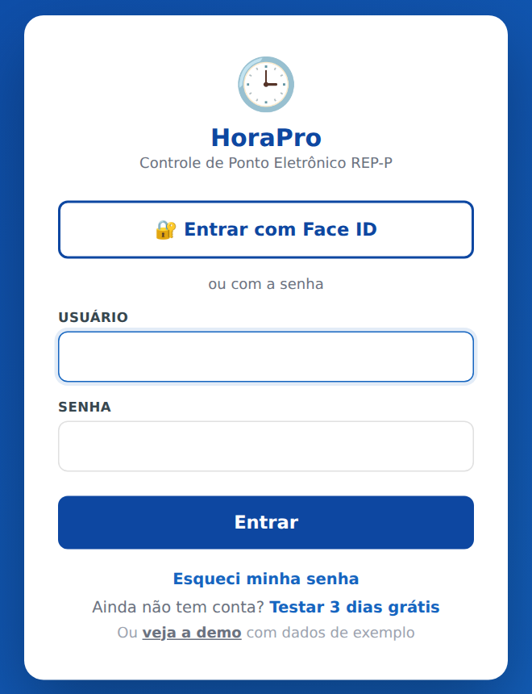
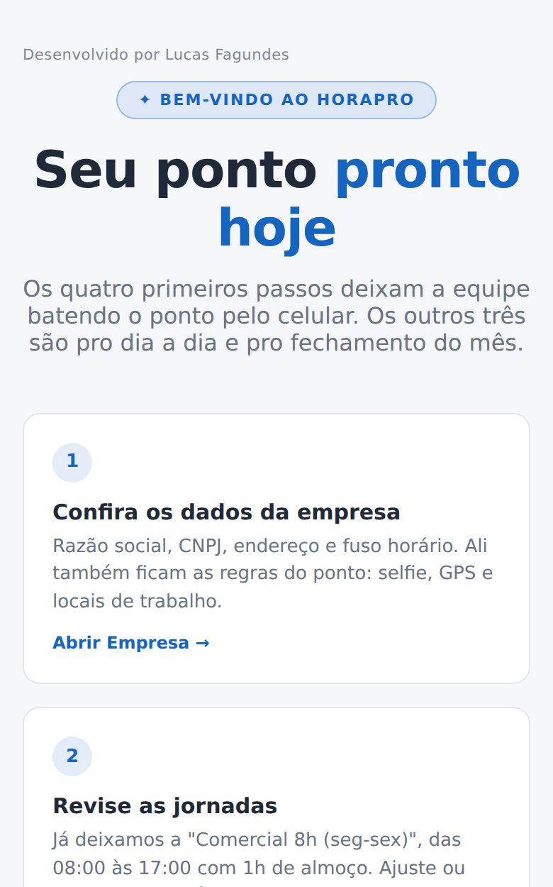
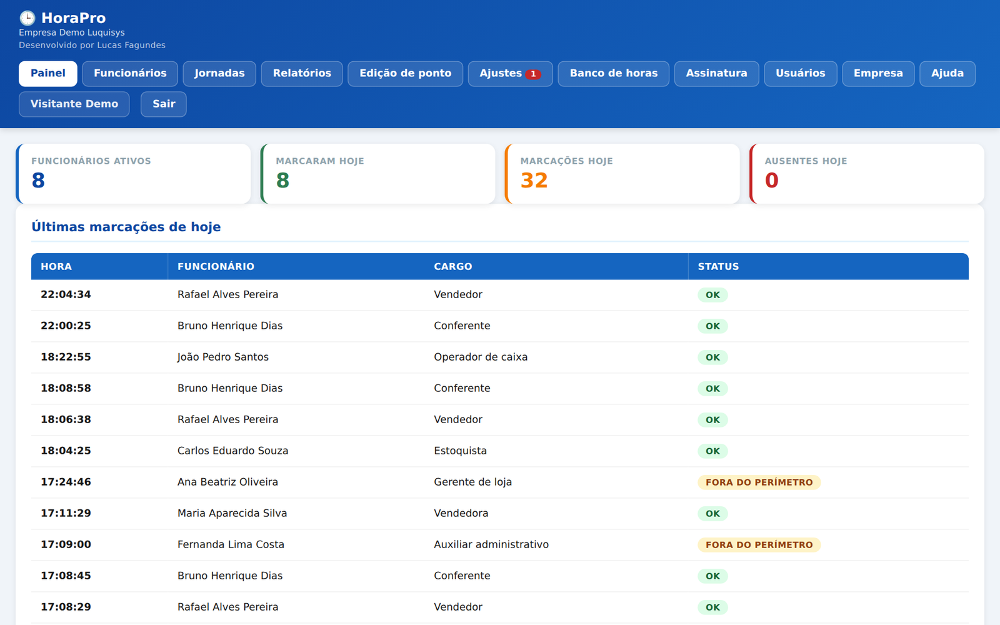
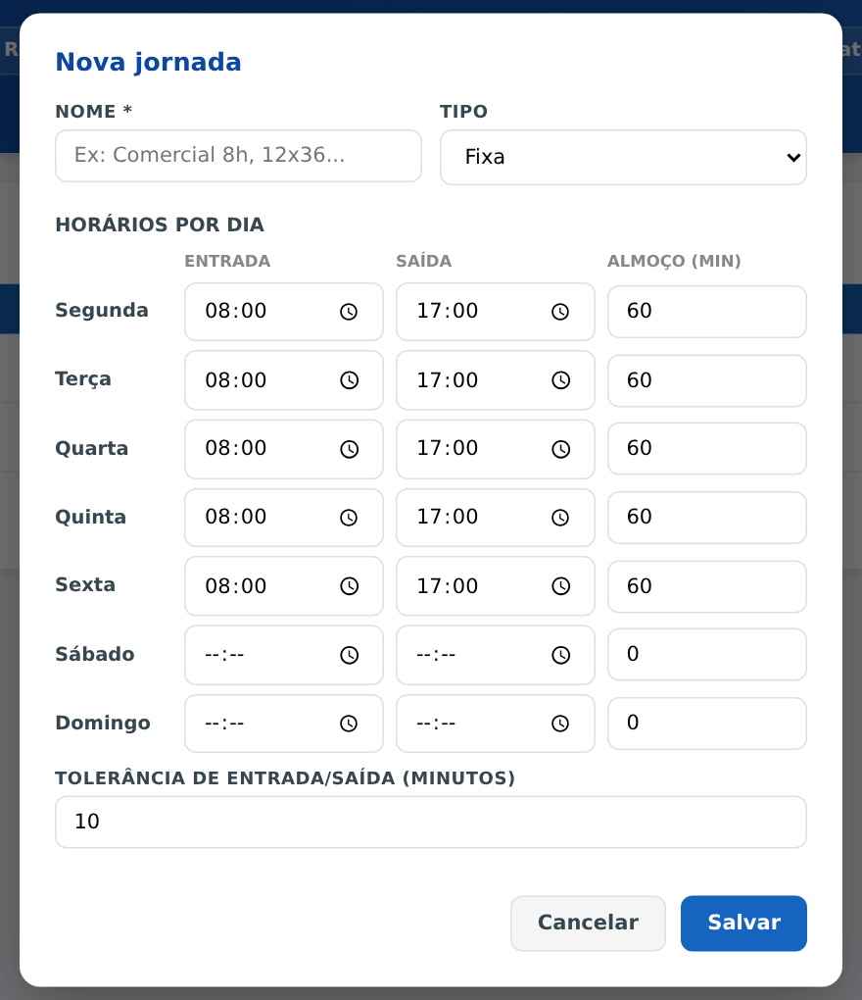
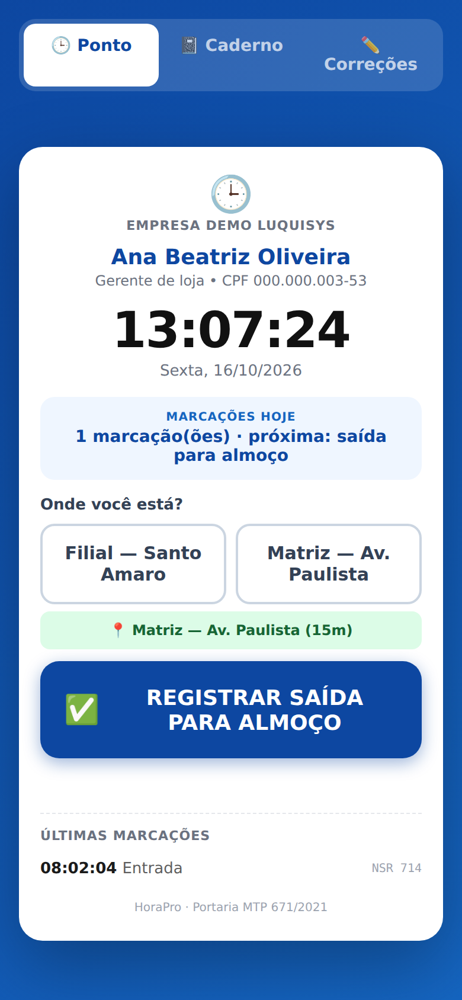
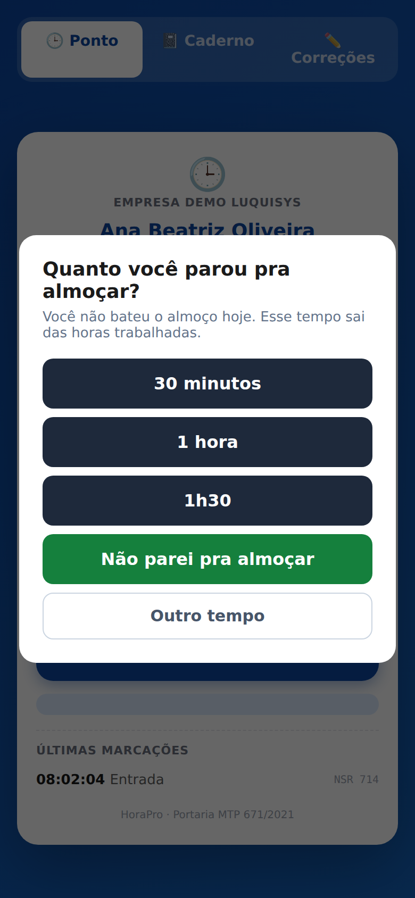
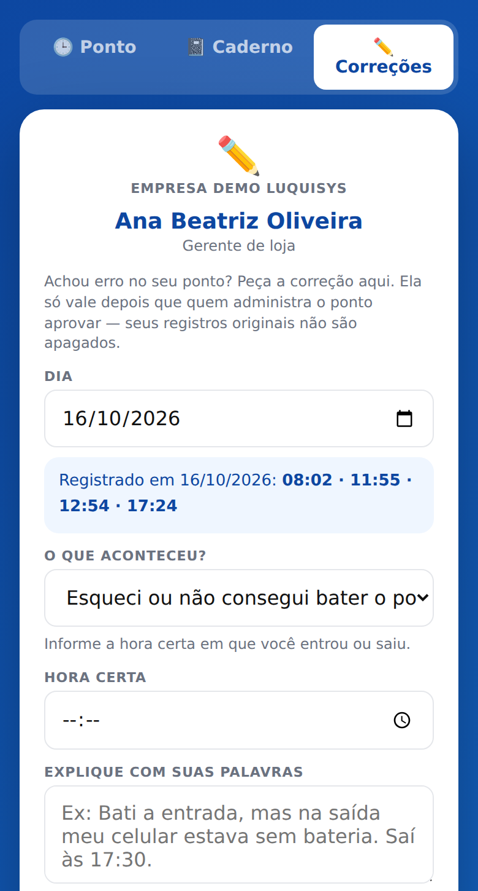
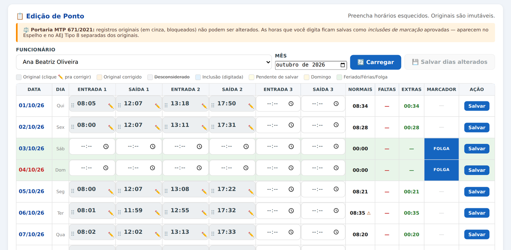
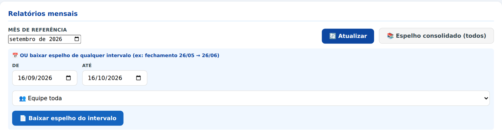
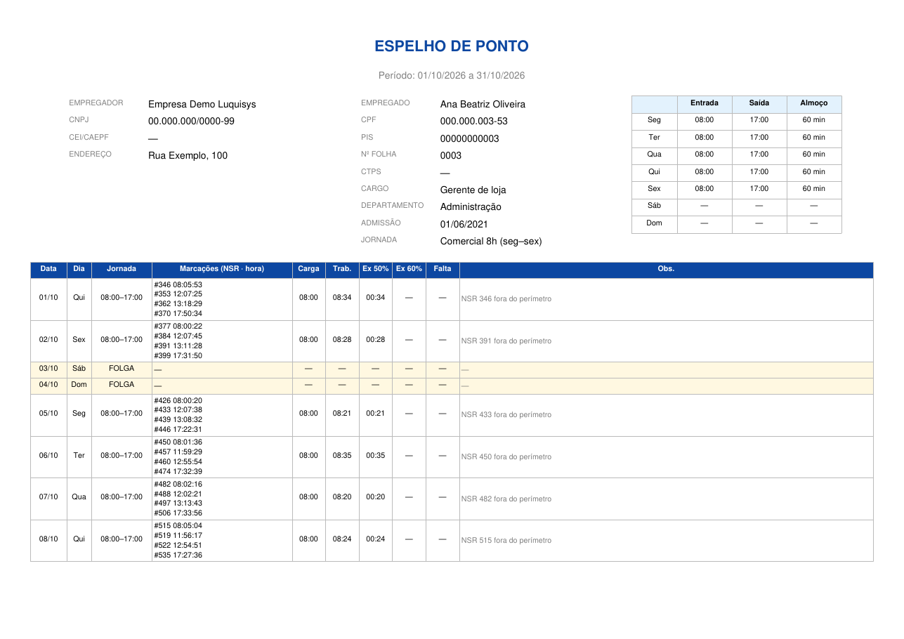

Ponto eletrônico pelo celular. Do primeiro acesso ao fechamento do mês: como configurar, como o funcionário bate o ponto e como corrigir o que faltar.
Este guia é pra quem administra o ponto da empresa (o empregador, o RH ou o contador). O funcionário não usa o painel: ele bate o ponto por um link próprio, explicado na seção 4.
No navegador do computador ou do celular: horapro.luqsys.com.br
O usuário é o e-mail do cadastro.
Toque em Esqueci minha senha e digite o e-mail. Chega um link pra criar uma senha nova, válido por 1 hora. Pra trocar a senha depois: clique no seu nome no menu → 🔒 Alterar senha.
Depois de entrar, toque em 🔐 Ativar Face ID no menu do Painel. Nas próximas vezes, naquele aparelho, é só tocar em Entrar com Face ID.
No endereço horapro.luqsys.com.br/instalar tem o passo a passo do iPhone e do Android. Fica com ícone na tela inicial, igual aplicativo.

Na primeira vez que você entra, o sistema abre a tela de boas-vindas com 7 passos. Os 4 primeiros deixam a equipe batendo o ponto:
Em Empresa: razão social, CNPJ, endereço e fuso horário. Ali também ficam as regras do ponto (selfie, GPS e locais).
A conta já vem com a Comercial 8h (seg-sex), das 08:00 às 17:00 com 1h de almoço. Ajuste ou crie outras.
Nome, CPF e a jornada de cada um.
Mande pelo WhatsApp o link de cada funcionário.
Painel, Relatórios e o app no celular.
Depois toque em Tudo certo, ir pro painel →. Dá pra rever esses passos em Ajuda, no menu.

É a primeira tela do dia a dia: funcionários ativos, quantos marcaram hoje, total de marcações e ausentes, e a lista das últimas batidas, que se atualiza sozinha.
Batida longe dos locais cadastrados aparece com Fora do perímetro.

Horista: sem horário fixo, só a carga diária em minutos (480 = 8h). Só o que passar dela vira extra, e dia sem batida não vira falta.

Em Funcionários → ➕ Novo funcionário. Obrigatórios: nome completo e CPF. Também dá pra pôr PIS, cargo, departamento, matrícula, CTPS, admissão, e-mail, telefone e a jornada.
Muita gente? 📥 Importar CSV: baixe o modelo, preencha e envie. CPF que já existe é pulado.
Banco de horas: marque Tem acordo de banco de horas só pra quem tem o acordo assinado. Sem a marca, as extras não entram no banco e ficam pro acerto do mês.
Mandar o link: na linha do funcionário, toque em 🔗 Link. Aparece o endereço, o QR Code e os botões 📋 Copiar link e 📱 WhatsApp. Com o telefone no cadastro, o WhatsApp abre direto na conversa dele.
Celular perdido ou link vazado: 🔄 Gerar novo link. O antigo para de funcionar na hora.
O funcionário não precisa de login nem de senha, e não precisa instalar nada: ele abre o link dele no navegador do celular.


| Não bateu o almoço | Se a jornada do dia tem almoço e a pessoa vai bater só a 2ª marcação, a tela pergunta "Quanto você parou pra almoçar?" (30 min, 1 hora, 1h30, Não parei pra almoçar ou outro tempo). Esse tempo sai das horas do dia. |
| Voltou cedo do almoço | Aparece "Faltam X min de almoço" com Vou esperar ou Registrar mesmo assim. É só aviso, não impede a batida. |
| Bateu duas vezes | Batida repetida em menos de 1 minuto não é gravada: a tela avisa que já registrou. |
| Sem internet | A tela confere se o ponto entrou antes de pedir pra repetir, e diz se registrou, se não registrou ou se não deu pra confirmar (aí é recarregar quando o sinal voltar e olhar o histórico). |
| Selfie | Exigir selfie a cada marcação: só registra com a foto. As fotos ficam em Relatórios → 📷 Fotos. |
| GPS | Exigir GPS: a tela pede a localização. Sem sinal ou sem permissão, a pessoa consegue bater assim mesmo, e a batida fica sem coordenada. |
| Locais de marcação | Cadastre cada lugar com latitude, longitude e raio (o botão 📍 usa a posição do aparelho, então faça isso no local). Batida longe não é bloqueada: entra e aparece como Fora do perímetro pra você conferir. |
| Abas extras | 📓 Caderno (o funcionário anota o que fez no dia) e ✏️ Correções (ele pede correção do ponto). Cada uma liga e desliga em Empresa. |
| Adicionais e feriados | % da hora extra em dia útil e em domingo/feriado, adicional noturno, calendário de feriados nacionais (os municipais você adiciona) e dias de horário especial. |
Na aba ✏️ Correções do celular ele escolhe o dia, o que aconteceu (ex.: "Esqueci ou não consegui bater o ponto", "Bati, mas a hora ficou errada", atestado médico), a hora certa e explica. Dá pra anexar foto.
O pedido chega em Ajustes, na aba 👤 Pedidos do colaborador; o número no menu mostra quantos estão pendentes. Aprove ✅ ou rejeite ❌ com o motivo, que volta pro funcionário.

Escolha o funcionário e o mês. Pra incluir uma batida esquecida, digite a hora no dia e toque em 💾 Salvar dias alterados. Pra hora errada ou batida repetida, clique no ✏️ da marcação: Corrigir marcação original ou 🚫 Desconsiderar (duplicada). A batida original nunca é apagada: fica guardada, e as cores mostram o que é original, corrigido, desconsiderado ou incluído.

Atestado, férias, folga, falta justificada ou a descontar: em Ajustes → ➕ Lançar ajuste, com o funcionário, o tipo, a data (ou de/até) e o motivo.
Em Relatórios, escolha o mês: aparece cada funcionário com dias com marcação, horas trabalhadas, previstas, extras e faltas. 📄 Espelho gera o PDF de um funcionário; 📚 Espelho consolidado (todos), da equipe inteira. Fechamento fora do mês cheio (ex.: 26 a 25)? Use 📄 Baixar espelho do intervalo.


Na mesma tela: 📥 Baixar AFD, 📥 Baixar AEJ e 📥 Baixar ATTR assinado, os arquivos da Portaria 671/2021 pra entregar quando pedirem, e 📷 Fotos com as selfies do mês.
No fim do mês, em Banco de horas, escolha o mês e toque em ⚖️ Consolidar todos do mês: o sistema soma extras menos faltas e lança no saldo de quem tem o acordo marcado. Rodar de novo não duplica, e falta com ajuste aprovado não vira débito. Lançamento manual e histórico ficam na linha de cada funcionário.